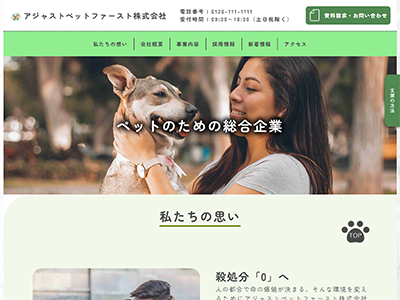

架空のペット総合事業会社のコーポレートサイトを制作いたしました。求職者支援訓練にて初めてHTML・CSSを学び、約1か月で制作。
URL
サイトのコンセプト
「殺処分0」を目標にペットのための総合企業としての会社であることをアピール
制作期間
素材集め ：約3日
デザイン ：XD（約1週間）
コーディング：HTML CSS（約2日）
コンバージョン（サイトの目的）
①ペットの譲渡や事業内容の寄付の募集
②採用
③事業内容の周知
ターゲット
性別 ：男女
年齢層 ：20代～
パソコンスキル：不要
主要カラー
全体的に「安心感」を表現するためライトで優しいめな色をベースに使用
ベースカラー：ホワイト #ffffff
ブランドではなく企業としてのメッセージを前面に出したいので、文字や写真が色の印象に引っ張られないようにシンプルな白を起用
メインカラー：ライトグリーン#90ee90
自然や植物をイメージできる色。
爽やかで安らぎを感じることができる色で、見ていると癒され安心感があるので、興奮が抑えられ、長時間見ていても疲れにくい色だといわれている。
企業のコンセプトに合わせた「優しい」雰囲気を出すのに最適な色のため採用
アクセントカラー：くすんだ緑#528852
ベースカラーである「ライトグリーン」の補色としてライトグリーン系統の暗めな「くすんだ緑」を採用することにより周りの緑と一体感を持たせつつ、重要な部分を目立たせる効果がある
デザインについて
ペットの総合企業（架空）を前面に打ち出しているため様々な事業展開を行っている会社です。
テーマとして「殺処分0」というのを掲げています。人間の都合で保健所に連れて行かれてしまう子を減らし、ペットと人が安心して共存できる社会作りを目的にした会社というのを意識して作りました。
そのため、配色は「緑」をメインに安心感を持たせる配慮をしています。
また、フォントに関しても少しでも優しい雰囲気を出せるよう「丸ゴシック」を採用しています。
コーディングについて
1作目の制作だったため、正しくコーディングを行えるように意識しました。写真を多く使用した為、写真の間隔を特に意識し、
視覚的なバランスを考慮して写真同士が詰め込み過ぎないように、適度な空白を空けています。
写真を並べる際には、まとまり毎に各写真の間隔をなるべく均等に保つようにし、デザインの基礎である「外側を広く、内側に行くにつれて狭く」を意識しました。
SEO対策も意識し、マークアップに関しては不要な「altタグ」の削除や「imgタグ」内のaltタグの説明、headタグのサイトの説明をページ毎で分けたり「h1～h6」まで、しっかり順番毎になっているかも心掛けて作成しました。